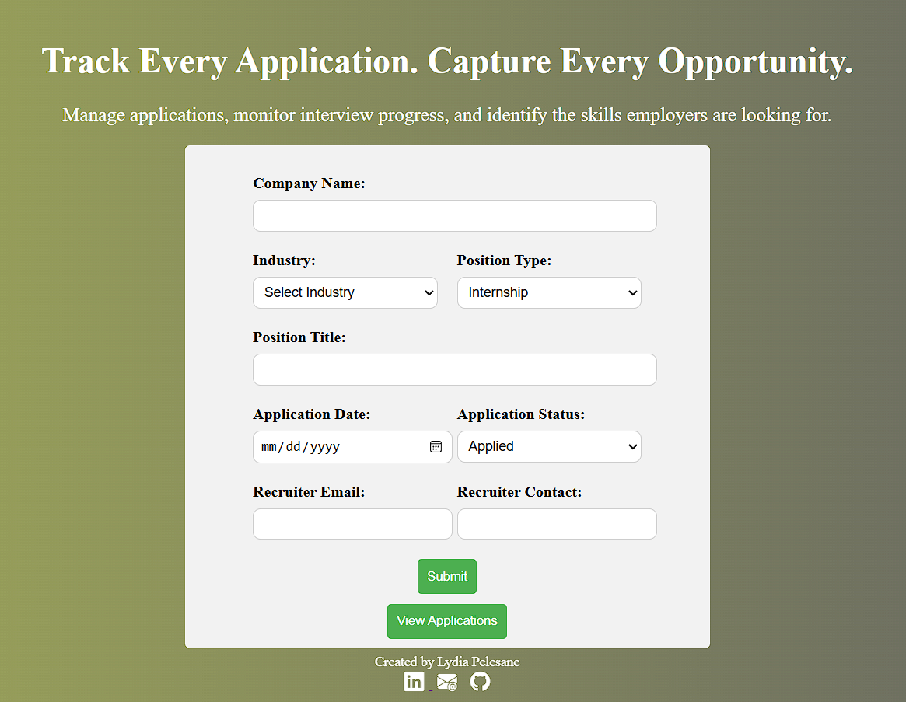

My Portfolio
Explore a selection of projects that reflect my journey as an Information Technology student. These projects demonstrate my skills in software development, web technologies, databases, and problem-solving while showcasing my passion for creating practical digital solutions.

Job Tracker
A web application designed to help graduates organise and manage their job applications by recording company details, tracking application status and storing recruiter information.
Professional Experience
Practical experience gained through entrepreneurship, client work and community service.
Co-Founder & Web Developer
Elite Web Creations
Co-founded a web development business, designing responsive websites for small businesses and managing projects using Agile methodologies and Jira.
Owner / Operator
Home Printing & Document Services
Managed a home-based document services business providing printing, scanning, laminating and professional document preparation for the local community.
Administrative Assistant
Property Sales Support
Organised client documentation, maintained property listings and assisted with administrative and marketing activities.
Volunteer IT Support
Community Support
Assisted community members with software installation, troubleshooting and basic computer maintenance.
Programming
Introduction to Python
Completed alongside my university studies to reinforce Python fundamentals, including variables, functions, loops and basic programming concepts.
Sololearn • 2023Introduction to Java
Completed to support my university programming module, strengthening my understanding of Java syntax, classes, methods and object-oriented programming.
Sololearn • 2024Introduction to SQL
Reinforced database concepts by practising SQL queries, filtering, sorting and relational database fundamentals.
Sololearn • 2025SQL Intermediate
Built on my university database coursework by applying joins, aggregate functions, grouping and subqueries to solve practical database problems.
Sololearn • 2025Web Development
Introduction to Coding
Built a foundation in HTML, CSS and JavaScript through practical coding exercises.
SheCodes • 2023Introduction to Web Development
Created interactive web pages using HTML, CSS and JavaScript.
SheCodes • 2023Responsive Web Development
Designed responsive websites using Bootstrap, Flexbox and CSS Grid.
SheCodes • 2023React Development
Built modern web applications using React, reusable components and hooks.
SheCodes • 2023IT Support & Productivity
Cisco IT Support Basics
Learned IT support fundamentals including troubleshooting, networking and computer hardware concepts.
Cisco • 2026Getting Started with Microsoft 365
Learned Microsoft 365 applications, cloud collaboration and workplace productivity tools.
Microsoft • 2026Windows 11 for IT Support
Practised Windows 11 troubleshooting, maintenance and support techniques for IT professionals.
LinkedIn Learning • 2025Data & Analytics
Excel Skills for Business
Learned spreadsheet fundamentals, formulas, data organisation and professional business reporting.
Coursera • 2026Excel Skills for Business: Intermediate I
Applied advanced Excel functions, data analysis, charts and productivity techniques.
Coursera • 2026Data Analytics with AI
Explored AI-powered data analysis, data visualisation and practical decision-making techniques.
Sololearn • 2025Digital Marketing & Business
Fundamentals of Digital Marketing
Learned digital marketing fundamentals including SEO, online advertising, analytics and content marketing.
Google • 2023Digital Marketing: Crafting a Winning Strategy
Explored strategic marketing, customer engagement and building effective digital marketing campaigns.
MANCOSA • 2023Project Management & Collaboration
Jira Fundamentals
Learned Agile project management, issue tracking, Scrum workflows and project collaboration using Jira.
Atlassian • 2026Professional Development

120-Hour TEFL Certificate
Developed professional communication, lesson planning, classroom management and learner engagement skills.
TEFL Academy • 2023